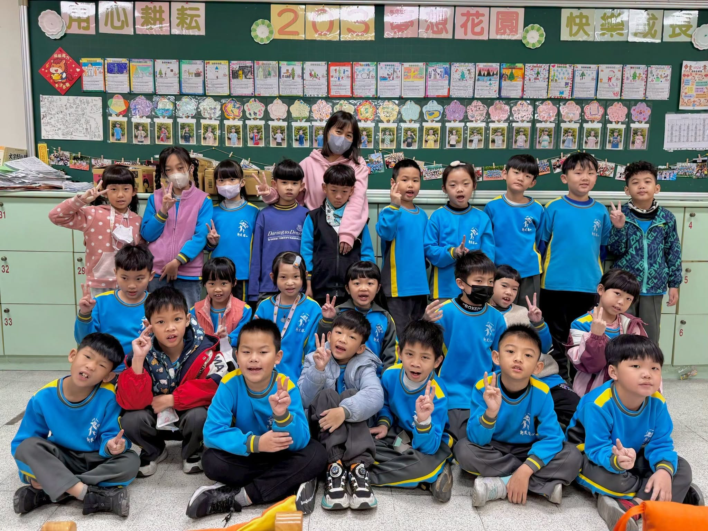
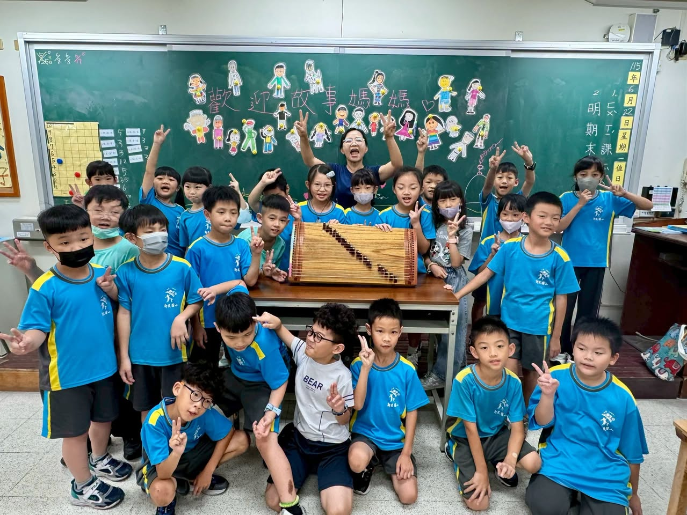
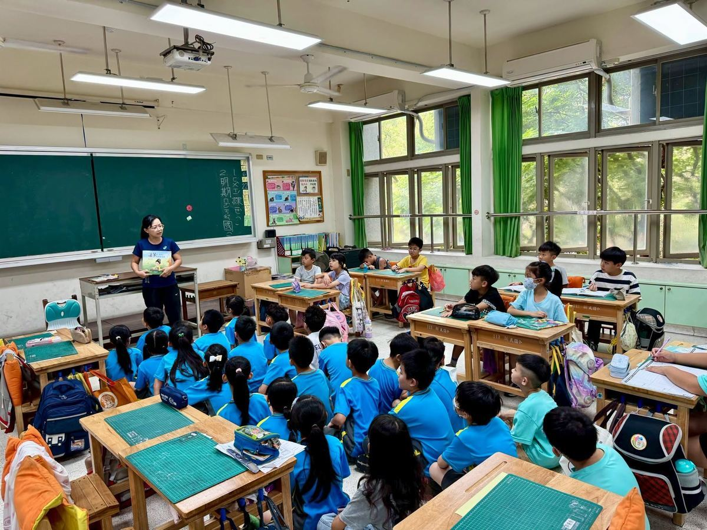

Every Monday morning at Hsinmin Elementary holds a very special promise — the arrival of the Reading Volunteers for Morning Story Time. Week after week, rain or shine, these dedicated volunteers walk into classrooms and open a world of wonder for the students through the magic of storytelling.
A single story can plant a seed of courage in a child's heart. A shared moment can become a warm and lasting memory. The children's focused eyes and bright smiles are the most precious reward these volunteers could ever receive.
We are deeply grateful to every Morning Story Volunteer who gives up their precious time, week after week, to accompany our students on their journey of growth. Because of your presence, reading lights up every Monday at Hsinmin — and through stories, children learn to think, to feel grateful, to show empathy, and to love.
Education is a gentle relay race, and you are the wonderful guides in these children's lives. Thank you for making reading the most beautiful scenery at Hsinmin Elementary. We look forward to every coming Monday, turning the pages of more wonderful stories together. 📚✨
📚🌞每週一的幸福約定❤️晨光故事時光❤️✨
每個星期一的早晨，新民國小總有一段最溫暖、最期待的時光——✨晨光故事志工✨來到班級，陪伴孩子們走進故事的世界。
一個故事，可能是一顆勇敢的種子；一句分享，也可能成為孩子心中最溫暖的力量。孩子們專注的眼神、開心的笑容，都是晨光志工最珍貴的回饋💖
感謝每一位晨光故事志工，長期犧牲寶貴時間，風雨無阻地陪伴孩子成長。因為有您們，用閱讀點亮每一個星期一，也讓孩子在故事中學會思考、感恩、同理與愛🌈
教育是一場溫柔的接力，而您們，就是孩子生命中的美好引路人。謝謝您們，讓閱讀成為新民最美的風景🥰
誠摯感謝每一位晨光故事志工！期待未來每一個星期一，我們都能繼續攜手，陪伴孩子翻開更多精彩的故事篇章。📚
Words About Reading & Volunteering英語學習角 · 和閱讀與志工有關的小單字
Six key words from this story, each with an example sentence — then a five-question quiz. Tap 🔊 to listen.
六個關鍵字，每個字配一個例句，最後有五題小考。點 🔊 聽發音。
情境：一位學生向家長分享每週一早晨的故事時光。